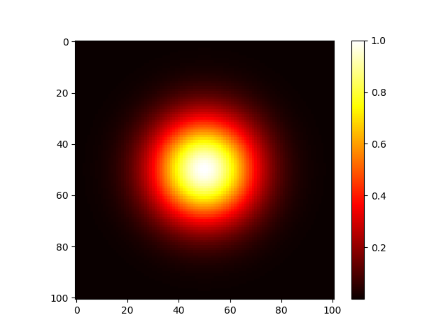

https://matplotlib.org/stable/api/_as_gen/matplotlib.pyplot.imshow.html
https://matplotlib.org/tutorials/introductory/images.html
https://matplotlib.org/stable/api/_as_gen/matplotlib.pyplot.colorbar.html
Display data as an image, i.e., on a 2D regular raster.
# matplotlib.pyplot.imshow(X, cmap=None, norm=None, aspect=None, # interpolation=None, alpha=None, vmin=None, vmax=None, origin=None, # extent=None, filternorm=1, filterrad=4.0, resample=None, url=None, *, # data=None, **kwargs) # # X : array-like or PIL image # The image data. Supported array shapes are: # (M, N): an image with scalar data. The data is visualized using a colormap. # (M, N, 3): an image with RGB values (0-1 float or 0-255 int). # (M, N, 4): an image with RGBA values (0-1 float or 0-255 int), # i.e. including transparency. # cmap : str or Colormap, default is 'viridis' ['hot', 'cool', 'gray'] # interpolation : default is 'nearest' (no interpolation) ['bilinear', 'hamming'] # # Colormaps are used to convert data values (floats) from the interval [0, 1] # to the RGBA color that the respective Colormap represents.
# heatmap1.py import numpy as np import matplotlib.pyplot as plt data = np.random.random((8, 8)) #data = np.arange(100).reshape((10,10)) # data will be scaled to [0,1] plt.imshow(data, cmap='hot', interpolation='nearest') # pixelated # 0.0 black, 0.37 red, 0.75 yellow, 1.0 white #plt.imshow(data, cmap='cool', interpolation='bilinear') # blurry plt.colorbar() #plt.colorbar(label='temperature') plt.show()
# Creating data using numpy functions. x = np.linspace(-5, 5, 101) y = np.linspace(-5, 5, 101) xx, yy = np.meshgrid(x, y) # xx.shape is (101, 101) # yy.shape is (101, 101) # data will be scaled to the range [0,1] #data = np.sqrt(xx**2 + yy**2) #data = np.abs(xx) + np.abs(yy) #data = np.cos(xx) * np.cos(yy) data = np.exp(-(xx*0.5)**2 -(yy*0.5)**2) # heatmap2.py
